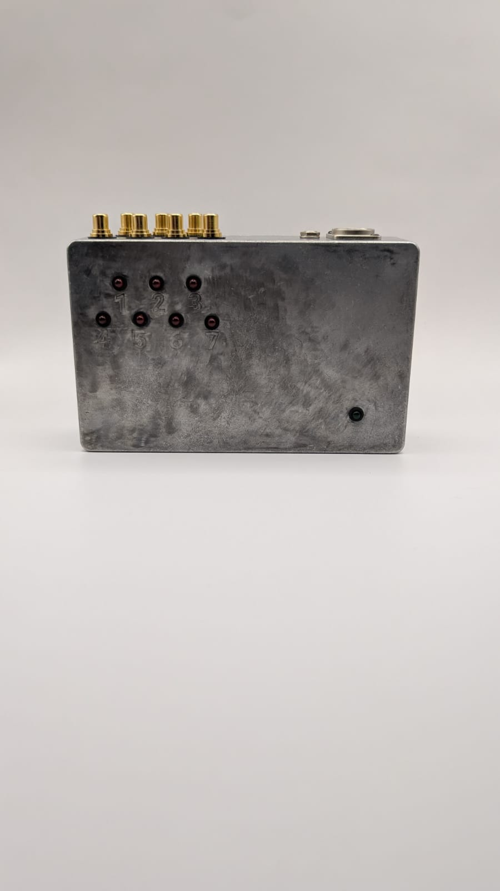
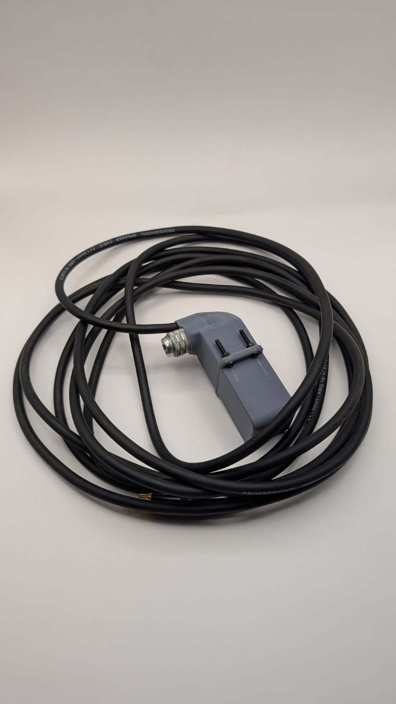

← Volver a proyectos

Máquina percutora MIDI
Modelado 3D · Fabricación · 2025Este proyecto consistió en desarrollar el modelado 3D, la composición y distribución de los componentes, y la fabricación de las carcasas para una máquina de percusión MIDI. El proyecto fue una comisión para Sokio, destinada a la ópera Splitting Absence, presentada en New Latin Wave, Nueva York.

